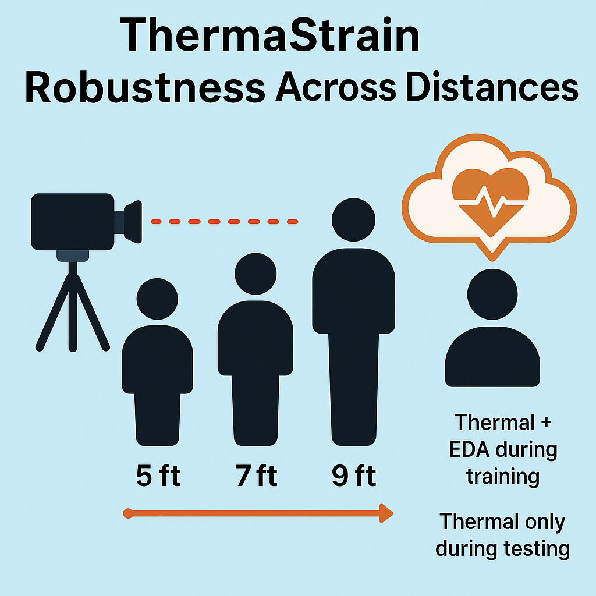
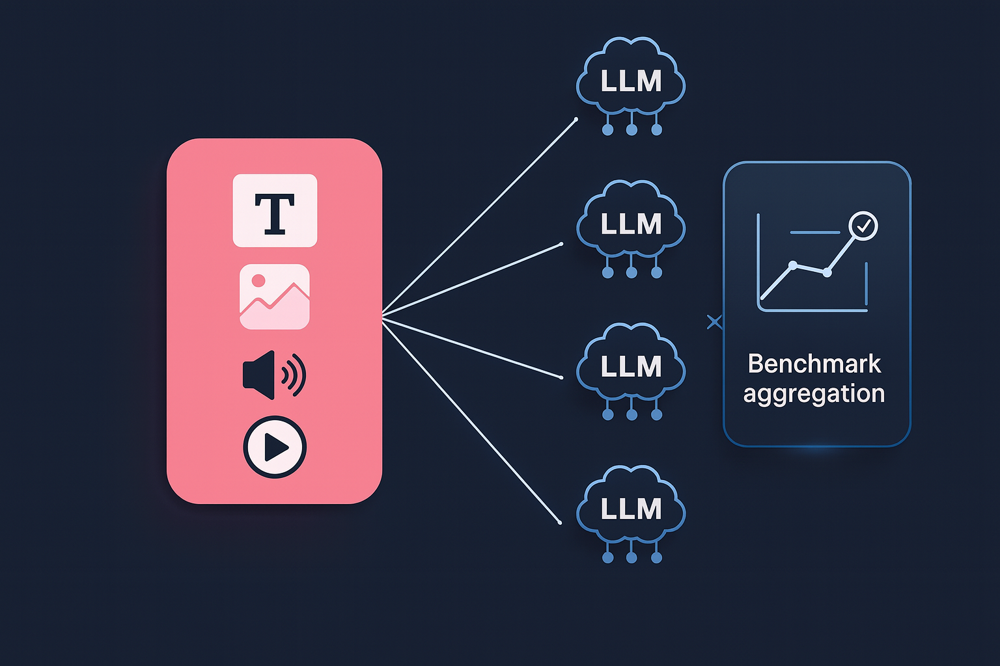
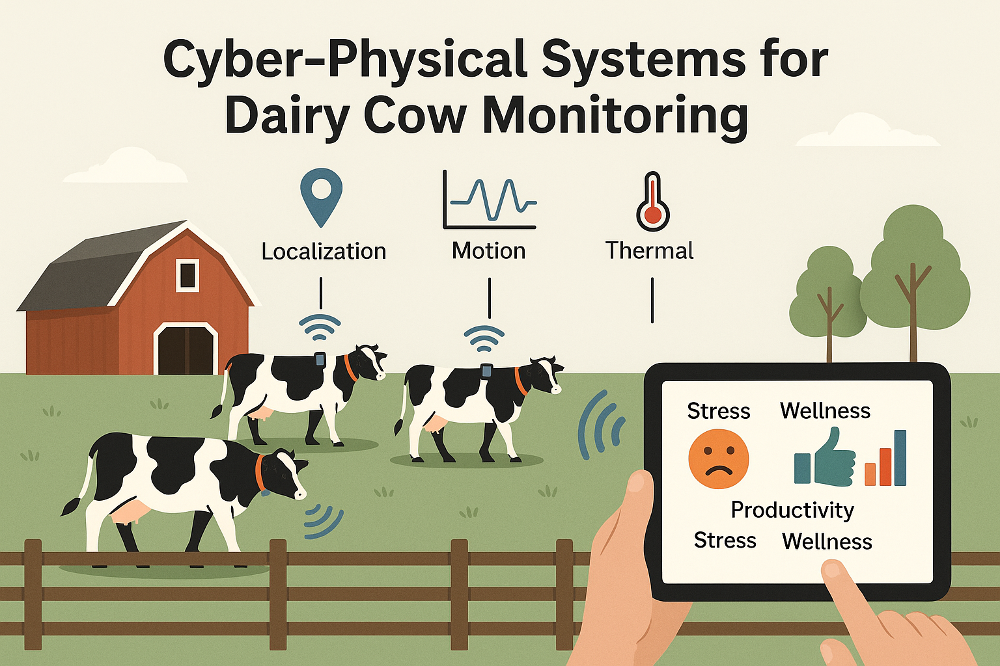
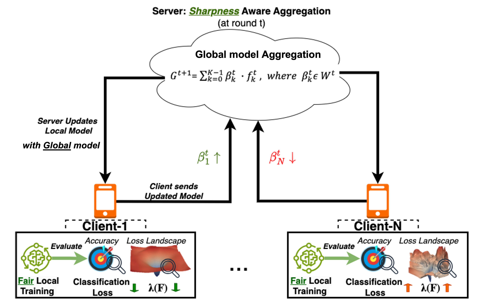
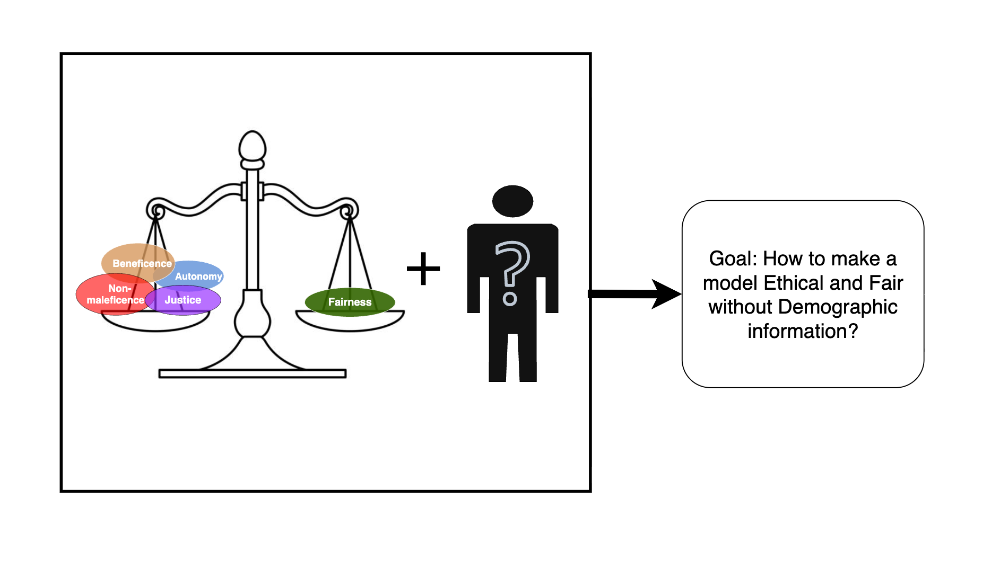

What the Lab Does
The UIS Lab pioneers intelligent and human-centered sensing technologies to transform health and well-being. We design trustworthy, privacy-aware, and robust AI systems that can sense, interpret, and respond to the complexities of human life—advancing early detection, personalized interventions, and scalable health solutions. By bridging engineering, computing, and biomedical science, we address challenges of distribution shifts, algorithmic fairness, AI ethics, and reliability with optimization methods, explainable AI solutions, and mathematical guarantees for trustworthy performance. Our research advances LLM and foundation model solutions tailored for human sensing—overcoming limited training data, capturing human heterogeneity, and building reasoning that aligns with health experts to deliver reliable, meaningful, and seamlessly integrated healthcare decisions.
Our Projects

Reading between the heat.(Co-teaching)
Thermal stress sensing often struggles at varying distances and angles, degrading accuracy. We developed ThermaStrain, a co-teaching framework that uses wearable EDA signals during training to teach the thermal modality richer stress features. This enables robust, contactless stress detection at test time—improving accuracy by over 9% across diverse distances and perspectives.
Collaborate
Multimodal LLMs and Trustworthy AI
We build evaluation frameworks for multimodal LLMs, and design multimodal systems that integrate sensor data for health monitoring.
- Evaluation frameworks for LLM/VLM for multimodal inputs
- Designing multimodal foundation models
- Trustworthy AI with theoretical guarantees

Cyber-physical Systems for Cattle wellbeing on Diary Farms
Our project develops cyber-physical systems that use sensor networks to monitor the health, behavior, and social interactions of dairy cows in real farm environments. By combining localization, motion, and thermal sensing, we aim to understand stress, wellness, and productivity at both the individual and herd level. These tools can help farmers manage animal health more effectively while also advancing broader research in sensing and animal science. Alongside system development, we are addressing key challenges such as energy efficiency, network reliability, and long-term deployment in harsh farm conditions.
Collaborate
Curvature-Aligned Federated Learning (CAFe): Fairness without Demographics
We developed CAFe, a federated learning approach that achieves fairness without relying on sensitive demographic attributes. By aligning loss-landscape curvature during local training and across clients, CAFe balances fairness and performance in decentralized human-sensing applications where bias factors are unknown or latent. Validated through theory, experiments, and real-world deployment on resource-constrained devices, CAFe demonstrates both practical feasibility and strong potential for privacy-preserving, equitable AI at the edge.
Collaborate
Ethical AI for Healthcare
AI is rapidly transforming healthcare, but many systems focus on overall accuracy while overlooking ethical considerations. A model may perform well on average yet still deliver unequal or harmful outcomes for certain patients. This project explores how to evaluate and guide AI systems to be not only fair but also ethical—promoting well-being, avoiding harm, ensuring equity, and fostering trust—without relying on sensitive demographic attributes.
CollaborateMeet the People
Supervisor

Prof. Asif Salekin (PI)
Leads UIS Lab. Research interests: human‑centered AI, mobile/wearable sensing, fairness, robustness, interpretability, privacy & reliability.
Ph.D. Students
![Yi Xiao]()
Harshit Sharma
Responsible and trustworthy AI in ubiquitous sensing applications, with an emphasis on model interpretability, fairness, and privacy.
Shaily Roy
Fairness‑aware federated learning; cluster‑aware personalization for digital health.
Sachin Deb
Cancer diagnosis using foundation model based machine learning approach, stress detection using advanced machine learning techniques.

Daniel Koronthaly
Ubiquitous computing and machine learning for health applications.
Graduated Ph.D. Students
- Jingyu Xin — Secure & trustworthy human‑centric sensing; defenses against data‑injection attacks.
- Brian Philip Testa — Emotional privacy and adversarial audio for speech emotion systems.
- Sawinder Kaur — Verified robust compressed networks; context‑robust personalization.
M.S. & Undergraduate Researchers
- Laxman Kumar, Guillermo Ramon Sanchez, Lohith Srikanth Pentapalli, Anusha Prakash, Jeffrey Ching, Mudit Dham, Fang Ziqi, Avery T. Gump, Peter Cheng — Contributing to sensing pipelines, modeling, and evaluation.
Selected Recent Publications
News & Updates
Stay Updated
Follow @SalekinAsif on X (Twitter) for the latest news, project updates, and announcements.
View Recent PostsFunding and Grants
Contact
Email: asif.salekin@asu.edu